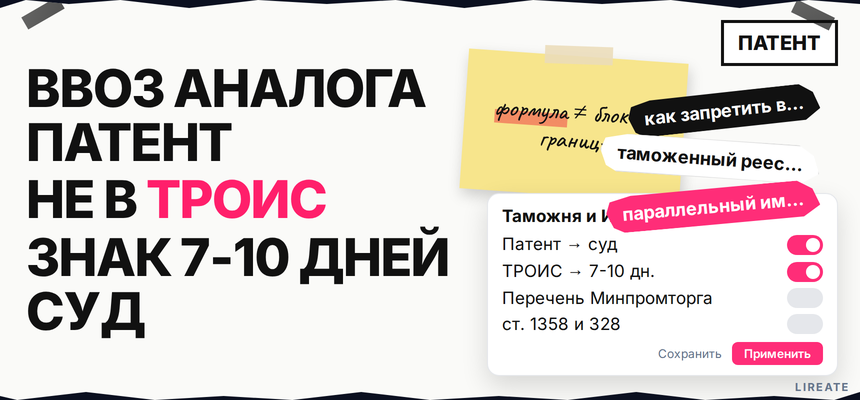
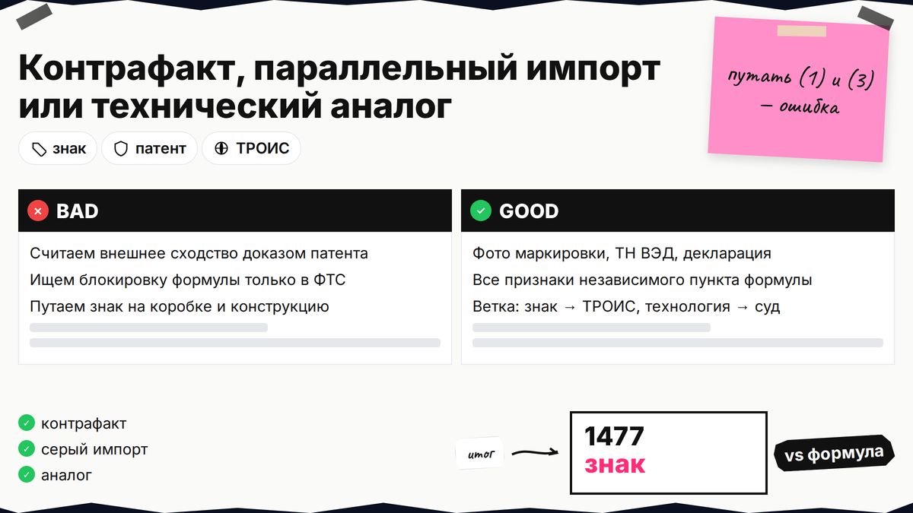
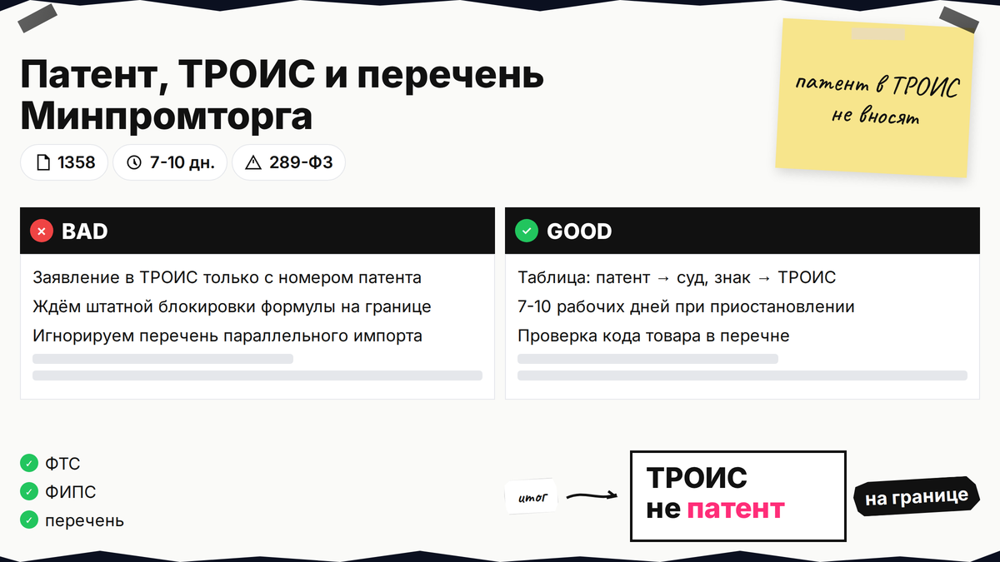
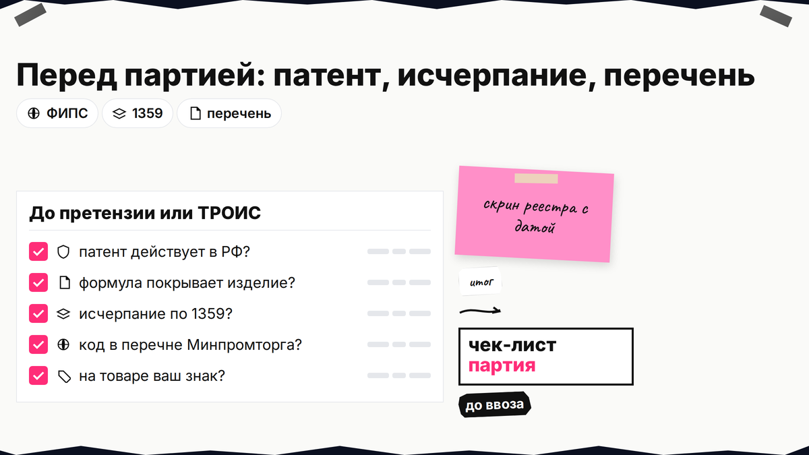

Запрос "как запретить ввоз аналога запатентованного продукта" часто уводит в параллельный импорт, хотя конкурент может ввозить изделие с вашей технологией без вашего бренда на коробке. Таможня не сверяет партию с патентной формулой - одной заявки в ФТС для "технического двойника" нет. Ниже вы сравните патент, ТРОИС и суд, проверите перечень Минпромторга и выберете ветку до претензии или заявления в реестр.

TL;DR / Быстрый инсайт: Патент на изобретение даёт право контролировать ввоз продукта с вашим решением (п. 2 ст. 1358 ГК РФ), но патент в ТРОИС не вносят - таможня не сопоставляет партию с формулой. Остановить выпуск на границе проще по товарному знаку в реестре ФТС: приостановление на 7-10 рабочих дней (ст. 113, практика по ТРОИС). Спор "похож по функции, другая маркировка" - это патентный иск и доказательства признаков, не контрафакт по знаку. Если патента ещё нет - начните с сравнения способов защиты изобретения.
Материал для патентообладателя, импортёра или юриста компании. Нормы ГК РФ, 289-ФЗ и перечни Минпромторга сверены на 04.11.2026; это не индивидуальная юридическая консультация и не обещание блокировки каждой партии.

Патент - это документ Роспатента на техническое решение (узел, состав, способ). Товарный знак по ст. 1477 ГК РФ - только про обозначение на товаре или упаковке, не про конструкцию внутри. ТРОИС (таможенный реестр объектов интеллектуальной собственности) - список ФТС, по которому таможня может приостановить выпуск, если на партии видно нарушение по объекту из реестра (реестр ФТС).
Три типичные ситуации: (1) контрафакт - подделка с вашим знаком; (2) параллельный импорт - оригинал бренда, но без вашего дистрибьюторского канала; (3) технический аналог - другое имя на коробке, но спор о том, попадает ли изделие под формулу патента. Путать (1) и (3) - главная ошибка в поиске "запретить ввоз аналога".
Делайте: зафиксируйте фото маркировки, декларацию, код ТН ВЭД и описание изделия. Не делайте: считать внешнее сходство доказательством нарушения патента - нужны все признаки независимого пункта формулы (методика сопоставления).

| Инструмент | Объект охраны | Реакция на границе | Что доказывать | Типичный срок |
|---|---|---|---|---|
| Патент (изобретение, ПМ) | Техническое решение в продукте | Нет штатной блокировки по формуле | Сопоставление с формулой; патент действует в РФ | Суд, претензия, обеспечительные меры |
| ТРОИС + товарный знак | Знак на товаре или упаковке | Приостановление выпуска при признаках нарушения | Контрафакт или неправомерное использование знака; не попадание в перечень параллельного импорта | 7-10+ раб. дней (ст. 328, 289-ФЗ) |
| Промышленный образец | Внешний вид изделия | Как патент - не в ТРОИС | Существенные признаки образца | Суд |
| Перечень параллельного импорта | Оригинал без канала правообладателя | Не блокируется для групп из приказа Минпромторга | Код товара в актуальном перечне (базовый перечень) | Compliance до ввоза |
В ТРОИС на конец 2026 - свыше 8 000 объектов (ФТС); это знаки по ст. 334 289-ФЗ, не патенты (таможенная защита ИС).
Делайте: выбрать ветку по таблице до траты бюджета на "не тот" инструмент. Не делайте: подавать заявление в ТРОИС только с номером патента - его туда не включат.

Шаг 1: найдите патент в реестре ФИПС по номеру, выпишите независимый пункт формулы и срок действия. Шаг 2: оцените исчерпание: если товар с вашим решением уже правомерно продавали в РФ с вашего согласия, повторный ввоз может не нарушать патент (п. 6 ст. 1359 ГК РФ). Шаг 3: для оригинала зарубежного бренда сверьте группу товара с перечнем, где ограничение исчерпания не применяется (комментарий по таможне и перечню).
Делайте: сохранить скрин реестра и дату проверки перечня. Не делайте: опираться на SEO-списки 2023 года без номера и даты приказа Минпромторга.
Если на товаре ваш товарный знак или узнаваемая упаковка, готовьте заявление по ст. 328 289-ФЗ: описание товаров, признаки легального оригинала, обязательство возместить вред декларанту. Рассмотрение - до месяца (ТКС); запись действует до 3 лет. Страхование ответственности - частый способ обеспечения (ориентир от ~300 000 ₽, обзор ТРОИС).
Делайте: отличать подделку от параллельного импорта оригинала - для последнего ТРОИС по знаку может не сработать (контрафакт vs серый импорт). Не делайте: задерживать партию без готовности к суду или возмещению, если знак на товаре законен.
Если на коробке нет вашего знака, но спор о конструкции, таможня не заменит поверенного. Соберите сопоставление с формулой: образец, фото, паспорт, декларация. Направьте претензию импортёру, сохраните таможенные документы. При крупной партии обсудите обеспечительные меры и иск (ст. 1358, нарушение патента).
Маршрут патентообладателя:
Классификация "аналога" → реестр ФИПС и формула → перечень Минпромторга (если оригинал бренда) → при знаке на товаре: ТРОИС → при одной технологии: претензия → суд
Делайте: комбинировать патент на узел и ТРОИС на бренд упаковки, если конкурент копирует и конструкцию, и маркировку. Не делайте: ждать, что декларант "сам поймёт" формулу - это зона патентного спора, не таможенного досмотра ("Таможня даёт добро?").
Сложный спор по формуле и доказательствам ввоза разумно передать поверенному: на Лирейт - сопровождение патентования и защиты патента без обещания исхода суда.
Итоговый вердикт: Полностью запретить ввоз технического аналога только патентом на таможне нельзя. Если видите свою маркировку - готовьте ТРОИС. Если спор о конструкции без знака - претензия и суд. Если ввозят оригинал конкурента - сначала перечень параллельного импорта, а не жалоба "по патенту" в ФТС.
Материал проверен: эксперт Елена Ковалева (главный эксперт по SEO/GEO), редакция Лирейт.
Достоверность данных: ст. 1358, 1359, 1477 ГК РФ, ст. 328 и 113 289-ФЗ, реестр ФТС и перечень параллельного импорта сверены с официальными и профильными источниками на 04.11.2026. Показы Яндекс Wordstat в среде подготовки материала не запрашивались.
Нет. В ТРОИС включают, в частности, товарные знаки и иные объекты по 289-ФЗ; патенты на изобретения и полезные модели не вносят (таможенная защита ИС). Для патента готовьте досудебку и иск, а не заявление только в реестр ФТС.
Контрафакт - подделка обозначения или упаковки; таможня может остановить выпуск по ТРОИС. Аналог по патенту - спор, использует ли изделие каждый признак формулы, даже если имя на коробке другое. Это разные основания и разные доказательства.
Штатно нет: таможня не проводит патентную экспертизу при оформлении (аналитика по границе). Направьте претензию правообладателю ввоза, соберите сопоставление с формулой и при необходимости обратитесь в суд.
Для товаров из перечня Минпромторга ввоз оригинала без согласия правообладателя может быть легализован; попытка заблокировать такой ввоз только по знаку через ТРОИС часто не срабатывает (ТРОИС и параллельный импорт). Сначала проверьте код группы в актуальном приказе.
Ст. 1477 определяет товарный знак, не патент на изобретение. В запросах про "ст 1477 гк патент" путают два инструмента: знак на этикетке и техническое решение внутри изделия.
При объекте в реестре - порядка 10 рабочих дней с возможным продлением по ТК ЕАЭС; если объект ещё не в реестре - 7 рабочих дней по ст. 113 289-ФЗ, продление до 10 при подаче заявления в ТРОИС. Сверяйте с актуальной редакцией на дату спора.